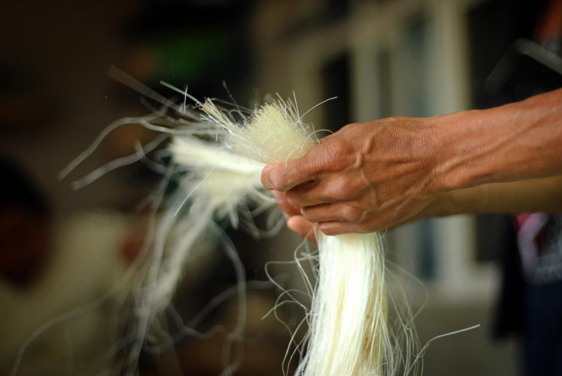

Lugares de turismo de Villa Progreso
En Villa Progreso puede visitar diferentes sitios turísticos como los siguientes…
Ver mas

Maguey, Ixtle y Pulque, cultura de nuestros antepasados otomíes
El ixtle o istle es una fibra vegetal que se obtiene de las pencas de ciertos magueyes como el agave ixtli y se usa para la fabricación artesanal de prendas, ayates, mecates, etc.
Ver mas

Actividades laborales
En lo que respecta a las actividades laborales de la población otomí, el trabajo fue dividido entre hombres y mujeres. La actividad de los hombres fue casi siempre la agricultura, en siembra temporal, en algunas regiones cercana a la laguna se practico el riego por medio de canales aunque con redes y salabre, y la fabricación de esteras en zonas adecuadas para ello.
Ver mas